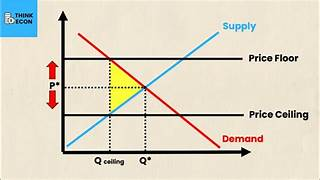
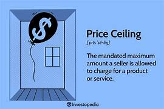

Lesson 6: Bahaging Ginagampanan ng Pamahalaan sa Regulasyon ng mga Gawaing Pangkabuhayan
Layunin: Napahahalagahan ang papel ng pamahalaan sa regulasyon ng mga gawaing pangkabuhayan upang matugunan ang pangangailangan ng mga mamamayan at mapanatili ang kaayusan sa ekonomiya.
Mga Mahahalagang Bahagi:
- Pagpapatupad ng mga Batas at Patakaran: Ang pamahalaan ay nagtatakda ng mga regulasyon tulad ng price ceiling at price floor upang maiwasan ang pananamantala ng mga negosyante at mapanatili ang makatarungang presyo ng mga bilihin.
- Pagbibigay ng Subsidyo: Nagbibigay ang pamahalaan ng tulong pinansyal sa mga sektor na nangangailangan upang mapanatili ang produksyon at matugunan ang pangangailangan ng mga mamimili.
- Pagkontrol sa Kalakalan: Ang pamahalaan ay nagtatakda ng mga patakaran sa kalakalan upang protektahan ang mga lokal na industriya at matiyak ang patas na kompetisyon sa merkado.
- Suporta sa Edukasyon at Teknolohiya: Nagbibigay ang pamahalaan ng mga programa at patakaran na sumusuporta sa pag-unlad ng edukasyon at teknolohiya upang mapabuti ang kalidad ng paggawa at produksyon.
- Pagpapatupad ng mga Batas sa Kalusugan at Kaligtasan: Ang pamahalaan ay nagtatakda ng mga regulasyon upang matiyak ang kaligtasan at kalusugan ng mga manggagawa at mamimili.
Halimbawa ng mga Regulasyon:
- Price Ceiling: Ang pagtatakda ng pinakamataas na presyo ng mga pangunahing bilihin upang maiwasan ang pag-abuso ng mga negosyante at matugunan ang pangangailangan ng mga mamimili.
- Price Floor: Ang pagtatakda ng pinakamababang presyo ng mga produkto upang matiyak ang kita ng mga prodyuser at maiwasan ang pagbagsak ng presyo na makakasama sa kanilang kabuhayan.
- Subsidyo: Ang pagbibigay ng tulong pinansyal sa mga sektor tulad ng agrikultura upang mapanatili ang produksyon at matugunan ang pangangailangan ng mga mamimili.
Pagpapahalaga: Mahalaga ang papel ng pamahalaan sa regulasyon ng mga gawaing pangkabuhayan upang matiyak ang kaayusan sa ekonomiya, protektahan ang mga mamimili at prodyuser, at matugunan ang pangangailangan ng mga mamamayan.

